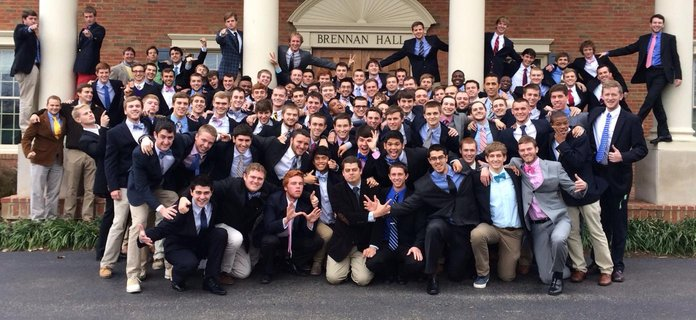

Beta Theta Pi

Nickname: Beta
President: Devon Wilson | (270) 933-2780 |
Recruitment: Taylor Turner | (270) 635-5305 |
108 Members
GPA: 3.45
Chapter colors: Delicate shades of pink and blue
Symbols: ΒΘΠ
Chapter History:
The Epsilon Omicron Chapter of Beta Theta Pi at the University of Kentucky
is proud to be able to finally call ourselves a chapter. Since being re-founded
as a colony at UK in the fall of 2010, we have made many successful strides
to be recognized within the fraternal community here at the university. After
nearly three years of hard work, perseverance, and dedication to our organization
in making ourselves known on campus, we fulfilled a list of prerequisites that
allowed us to petition for our charter to be recognized nationally as a chapter
of Beta Theta Pi. We received our charter in the beginning of August 2013 at
the 174th General Convention held in Charlotte, North Carolina. With 45 representatives,
we appeared with the largest delegation seen at a Beta General Convention in 20 years.
During that time, Beta has established itself on campus through its role in numerous philanthropic, service, and social events. For the past three years in a row, Beta has placed first in the fraternity division for Greek Sing, UK's largest philanthropic event. Beta worked with Kappa Delta sorority in organizing and hosting the first greek cheerleading event, Beta/KD Bring It On, raising nearly $9,000 overall, with over $6,000 benefiting domestic abuse prevention in Lexington. In addition, Beta has a strong representation in campus intramurals, with brothers participating in nearly every sport, as well as numerous campus leaders.
Beta Theta Pi has also worked to extend its service and its impact beyond the borders of UK's campus. In 2011, the fraternity teamed up with the International Book Project in Lexington to help sort, package, and ship thousands of books to underprivileged areas across the world.
Staying true to the core value of intellectual growth and academic achievement, the brothers of Beta Theta Pi push each other to excel in school. As a result, Beta achieved the highest GPA amongst all fraternities on campus in 2011 and the fall of 2012. The members of Beta are very diverse in their academic pursuits, but each works hard and has the support of his brothers in reaching each of his goals.
At the annual Greek Awards, UK Beta took home five awards. Not only did they claim three out of the four GPA awards (Highest Pledge Class GPA, Highest Standing Member GPA and Highest Combined GPA), but they also received the Violence Intervention and Prevention Award, which had never been won by a fraternity before. The highlight of the night came when Beta was honored with the Fraternity Dean's Cup, the highest award offered to any fraternity on campus.
The future of Beta Theta Pi at the University of Kentucky is bright. The brotherhood is strong, and grows stronger by the day. The fraternity looks forward to continuing to have a positive impact on campus and in the community while developing each of its members into better leaders.
Philanthropy events:
Semi-annual International Book Project community service event - Prepare shipments for
shipping overseas to third world countries in order to promote literacy rates and
intellectual equality. Both occasions have recorded an outstanding 100% chapter attendance.
Bring-it-on 2012 - Raising over $6,000 for domestic abuse prevention, the brothers
of Beta Theta Pi and the sisters of Kappa Delta teamed up to host the first Beta Bring
It On. The event was a cheerleading competition that paired sororities and fraternities,
all wrapped up with a final show performed by the 19-time champion UK Cheerleaders.
Recent Awards:
General Fraternity Awards
-John Holt Duncan Community Service Award-for our ongoing support of the International
Book Project.
-Charles Henry Hardin Leadership Development Award-for outstanding participation in
leadership development programs hosted by the Beta Foundation.
-Outstanding Risk Management Award
-Outstanding Campus Involvement Award
-The Virginia Tech Award for Academic Excellence in the South Region
-The Charles Henry Hardin Leadership Development Award (recognizing 60 members)
-Outstanding Recruitment Award
-Recognition for having three consecutive years of 100% participation and most overall members to join the Sons of the Dragon Club
-Our second Sisson Award, which is Beta's second most distinguished award given.
UK Awards
-VIP Award
-Highest New Member GPA
-Highest Returning Member GPA
-Highest Combined GPA
-Excellence in Recruitment and Retention
-Achievement in Social Development
-3-Time Greek Sing Champion
-Bryan Clark Outstanding Chapter Executive Officer-Todd Montgomery
National History:
Beta Theta Pi was founded in 1839 at Miami University in Oxford, Ohio.
In the 174 years of the fraternity, over 183,000 members have been initiated worldwide,
with over 5,800 active undergraduates.
Notable alumni of Beta Theta Pi include Wal-Mart founder Sam Walton, legendary basketball
coach John Wooden, several United States Congressmen, and numerous CEOs of high profile
companies.
In 1998, Beta Theta Pi launched the Men of Principle initiative which focuses on building
each man into a greater leader, capable of exemplifying the strong values of the fraternity.
Our Mission:
Beta Theta Pi is dedicated to building men of principle for a principled life. Our
brotherhood aids the individual, builds the Fraternity and strengthens the host academic
institution through lifelong devotion to intellectual excellence, high standards of
moral conduct and responsible citizenship
Our Vision
Every member will live Beta Theta Pi's values.
With the Men of Principle initiative, Beta Theta Pi gives a new voice to the enduring values of our Fraternity. We offer a membership experience that is unique - calling on men to become leaders and giving them the tools they need to do so.
Core Values
To build lasting bonds of friendship and brotherhood the Beta ritual calls for:
Mutual Assistance - Betas believe that men are mutually obligated to serve others in the
honorable labors and aspirations of life.
Intellectual Growth - Betas are devoted to high standards of academic achievement and
continually cultivating their minds.
Trust - Betas develop absolute faith and confidence in one another by being true to
themselves and others.
Responsible Conduct - Betas choose to act responsibly, weighing the consequences of
their actions on those around them.
Integrity - Betas preserve their character by doing what is morally right and demanding
the same from their brothers.
To build lasting bonds of friendship and brotherhood, Beta calls for:
Mutual Assistance - Betas believe that men are mutually obligated to help others in the
honorable labors and aspirations of life.
Intellectual Growth - Betas are devoted to continually cultivating their minds,
including high standards of academic achievement.
Trust - Betas develop absolute faith and confidence in one another by being true to
themselves and others.
Responsible Conduct - Betas choose to act responsibly, weighing the consequences of
their actions on themselves and those around them.
Integrity - Betas preserve their character by doing what is morally right and demanding
the same from their brothers.